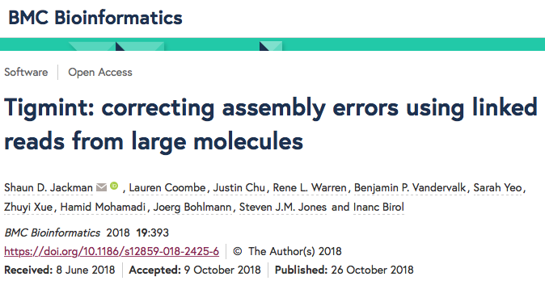
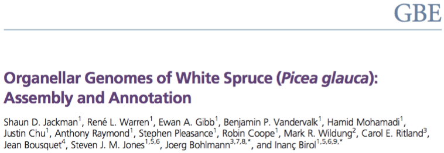

2018 Tigmint. BMC Bioinformatics 
2017 ABySS 2.0. Genome Research
2016 White Spruce Organelles. Genome Biology and Evolution 
2015 UniqTag. PLOS ONE
Selected Papers
Assembly of the complete Sitka spruce chloroplast… L Coombe, RL Warren, SD Jackman, C Yang, BP Vandervalk, …, I Birol PloS one 2016
Spaced seed data structures for de novo assembly
I Birol, J Chu, H Mohamadi, SD Jackman, K Raghavan, …, RL Warren International journal of genomics 2015
Konnector v2.0: pseudo-long reads from PE sequencing
BP Vandervalk, C Yang, Z Xue, K Raghavan, J Chu, H Mohamadi, SD Jackman, …, I Birol BMC medical genomics 2015
Sealer: a scalable gap-closing application…
D Paulino, RL Warren, BP Vandervalk, A Raymond, SD Jackman, I Birol BMC Bioinformatics 2015
On the representation of de Bruijn graphs
R Chikhi, A Limasset, SD Jackman, JT Simpson, P Medvedev Journal of Computational Biology 2015
Improved white spruce (Picea glauca) genome…
RL Warren, CI Keeling, MMS Yuen, A Raymond, GA Taylor, …, J Bohlmann The Plant Journal 2015
Assembling the 20Gb white spruce genome…
I Birol, A Raymond, SD Jackman, S Pleasance, R Coope, …, SJM Jones Bioinformatics 2013
Papers
Four first-author (or joint) papers
One paper each year from 2015 through 2018
Collaborated on 32 papers since 2009
28 papers with at least 10 citations
One first-author manuscript in review (ORCA)
One first-author manuscript in preparation
(Sitka spruce mitochondrion)
ABySS has been cited over 2,700 times!
Manuscripts
ORCA: A Comprehensive Bioinformatics Container Environment for Education and Research SD Jackman*, T Mozgacheva*, S Chen, B O’Huiginn, L Bailey, I Birol, SJM Jones
(in review)
Largest Complete Mitochondrial Genome of a Gymnosperm, Sitka Spruce (Picea sitchensis), Indicates Complex Physical Structure SD Jackman, L Coombe, RL Warren, …, J Bohlmann, SJM Jones, Inanc Birol